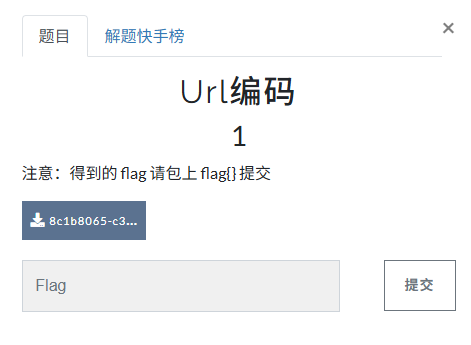

【BUUCTF】CRYPTO-刷题记录-URL编码
题目信息

解题步骤
根据题目，得到下面的内容：
1 | %66%6c%61%67%7b%61%6e%64%20%31%3d%31%7d |
本博客所有文章除特别声明外，均采用 CC BY-NC-SA 4.0 许可协议。转载请注明来源 末心的小博客！
相关推荐

2025-10-26
【BUUCTF】CRYPTO-刷题记录-Alice与Bob
题目信息 解题步骤 密码学历史中，有两位知名的杰出人物，Alice和Bob。他们的爱情经过置换和轮加密也难以混淆，即使是没有身份认证也可以知根知底。就像在数学王国中的素数一样，孤傲又热情。下面是一个大整数:98554799767,请分解为两个素数，分解后，小的放前面，大的放后面，合成一个新的数字，进行md5的32位小写哈希，提交答案。 注意：得到的 flag 请包上 flag{} 提交 寻找那对“命中注定”的素数给定的数字是： 198554799767 它看起来很大，但在现代计算面前，不过是小菜一碟。 如果这是 RSA 的模数 $n = p \times q$，那么 $p$ 和 $q$ 都是素数，且通常接近 $\sqrt{N}$。 于是我打开 Python，轻声说道：12345import mathN = 98554799767sqrt_N = int(math.isqrt(N))print(f"√N ≈ {sqrt_N}") 所以，我只需要从 313934 附近开始，向下寻找能整除 N 的素数。1234567p = sqrt_Nwhi...

2025-10-26
【BUUCTF】CRYPTO-刷题记录-RSA1
题目信息 解题步骤 题目给出了如下信息： 12345p = 8637633767257008567099653486541091171320491509433615447539162437911244175885667806398411790524083553445158113502227745206205327690939504032994699902053229 q = 12640674973996472769176047937170883420927050821480010581593137135372473880595613737337630629752577346147039284030082593490776630572584959954205336880228469 dp = 650079570221683462110904235119326153065004384105625293093094966335862501688183284072806602615026469307610935487409984138045488171609777830726811691...

2025-10-27
【BUUCTF】CRYPTO-刷题记录-一眼就解密
题目信息 解题步骤 一眼Base64，flag{THE_FLAG_OF_THIS_STRING}

2025-10-27
【BUUCTF】CRYPTO-刷题记录-摩丝
题目描述 解题步骤附件中给出了一串由点（.）和划（-）组成的字符串：.. .-.. --- ...- . -.-- --- ..-我们需要分析并解密这段信息，找出隐藏的 flag。 观察分析观察这串字符，它由 . 和 - 组成，并以空格分隔。这是典型的 摩斯密码（Morse Code） 格式。 什么是摩斯密码？摩斯密码是一种早期的数字化通信方式，由塞缪尔·摩尔斯（Samuel Morse）在19世纪发明，用于电报传输。 每个英文字母、数字或标点符号都被编码为一系列 点（·） 和 划（–）。 点表示短信号（dot），划表示长信号（dash）。 字符之间用 空格 分隔，单词之间通常用 / 或多个空格分隔。 字母 摩斯码 A .- B -... C -.-. D -.. E . F ..-. G --. H .... I .. J .--- K -.- L .-.. M -- N -. O --- P .--. Q --.- R .-. S ... T - U ..- V ...- ...

2025-10-27
【BUUCTF】CRYPTO-刷题记录-看我回旋踢
题目描述 解题步骤下载附件后，得到：synt{5pq1004q-86n5-46q8-o720-oro5on0417r1} synt，经常做CTF也要记住，flag的13位凯撒。 1flag{5cd1004d-86a5-46d8-b720-beb5ba0417e1} ROT13代码12345678910111213141516171819def rot13(text): result = "" for char in text: if 'a' <= char <= 'z': # 小写字母：a-z (97-122) result += chr((ord(char) - ord('a') + 13) % 26 + ord('a')) elif 'A' <= char <= 'Z': # 大写字母：A...

2025-10-27
【BUUCTF】CRYPTO-刷题记录-MD5
题目信息 解题记录根据附件，拿到了一串MD5：e00cf25ad42683b3df678c61f42c6bda flag：flag{admin1}